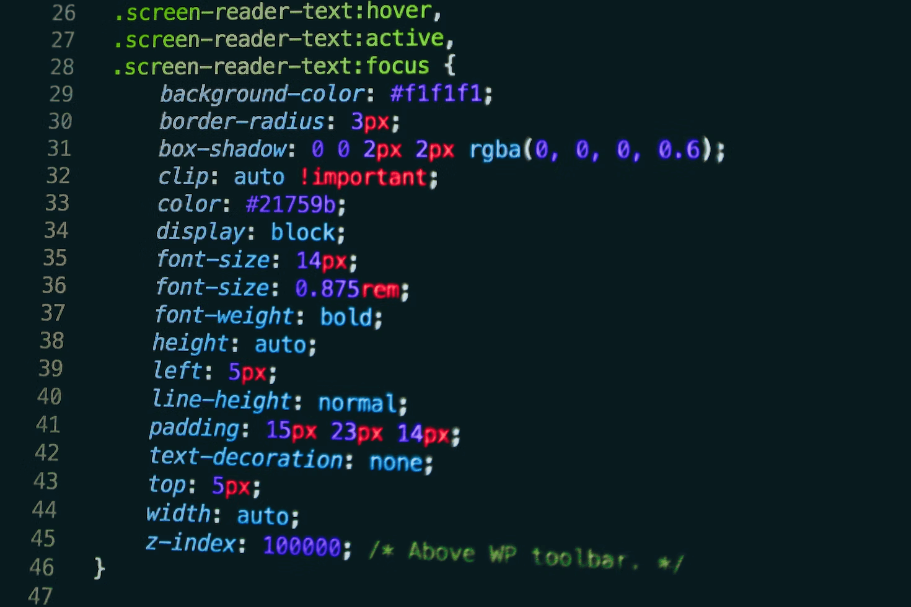
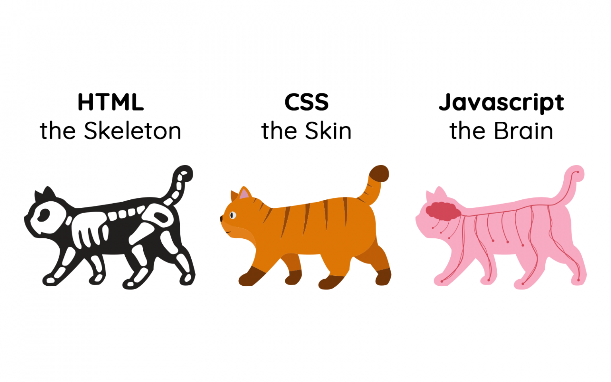
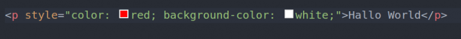
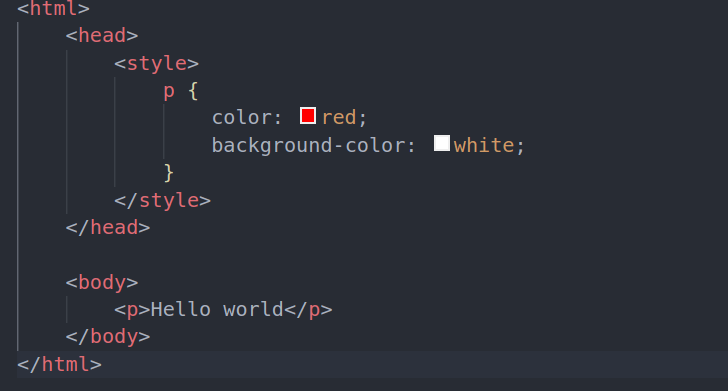
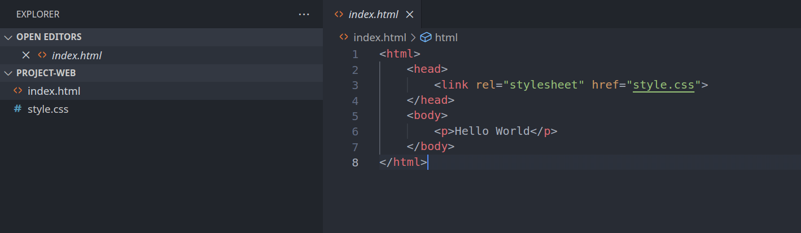
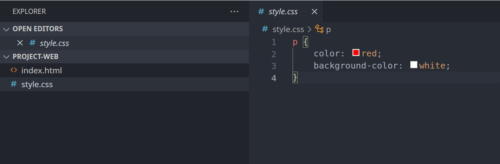

Dasar Penggunaan CSS
Pada artikel sebelumnya, kita telah mempelajari cara membuat web
sederhana dengan HTML. Nah, pada artikel kali ini, kita akan
mempelajari lebih dalam mengenai pembuatan dan konsep CSS. CSS
merupakan bahasa yang sangat penting pada pembuatan aplikasi
berbasis website.
Sebelumnya, kita telah mempelajari tentang HTML, mulai dari cara
menggunakannya, manfaatnya, dan praktik pembuatan sebuah halaman
website. Kali ini, kita akan melanjutkan pembelajaran dari artikel
sebelumnya. Jika kamu belum membaca atau sudah lupa dengan artikel
sebelumnya, silakan baca kembali ya.
Pengertian CSS

Sebelumnya, apakah kalian tahu, apa itu CSS? Itu adalah singkatan dari Cascading Style Sheets, artinya sebuah bahasa sederhana yang digunakan untuk menambahkan gaya /styling (misalnya, font, warna, spasi) ke sebuah halaman website. Jika diibaratkan, HTML merupakan sebuah kerangka, CSS ini bertindak sebagai kulit/penutup dari kerangka tersebut.

Perlu diingat ya, CSS bukan sebuah bahasa pemrograman sehingga tidak bisa menjalankan logika-logika yang secara umum ada di bahasa pemrograman.
Cara Membuat CSS
Sebelum kita melihat hasil dari kode CSS, kita harus memiliki kode HTML terlebih dahulu. CSS ini tidak akan bekerja tanpa adanya file HTML. Ada tiga cara dalam menggunakan CSS pada file HTML.
-
Inline
Metode ini digunakan dengan cara memasukkan file css ke dalam tag HTML secara langsung.

-
Internal
Metode ini menggunakan CSS dengan tag pada file html. Dengan ini, kita bisa memisahkan antara tag html dengan kode css tetapi masih dalam satu file yang sama.

-
External
Metode ini digunakan dengan cara memisahkan file html dan juga file css. Untuk memasukkan file css ke dalam html bisa menggunakan kode html seperti berikut.


Dengan metode ini, kita bisa memasukkan beberapa file css ke dalam satu file html saja.